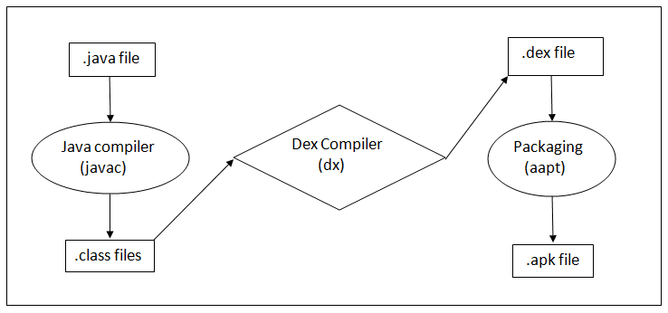

Dalvik Virtual Machine:

The official language for Android App Development is Java.
JDK(Java Development Kit) will compile our Java code and it is going to produce a file called .class file.
Also called as Java bytecode.Java bytecode is platform independent code because it can run on
multiple platforms.
In android Dex Compiler takes all the .class file as input and it is going to produce a single lightweight file
called .dex file.
Note:
Dex Compiler produces a single .dex file for multiple .class files.
Dex is termed as Dalvik Executable Code.
DVM takes this single .dex file as input and generates the final machine code.
With Android Version 2.2 (Froyo) Google introduced JIT(Just in Time ) compilation in Dalvik.
Till Android Version 5.0 (Lollipop) Dalvik was the runtime use by Android which is being replaced by
ART(Android Run Time) in later versions.
Why do we need a .dex file when actually even .class file is platform independend?
1. DVM is Register based which is designed to run on low memory unlike JVM which is Stack based.
Thus through DVM we are able to achieve small memory footprint with higher battery life.
2. Java tools are free but the JVM is not free, so the android developers from google have made their own virtual machine and made it as free.